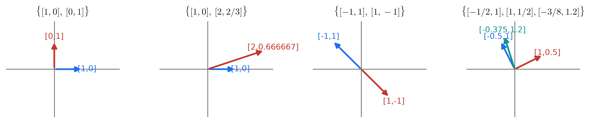
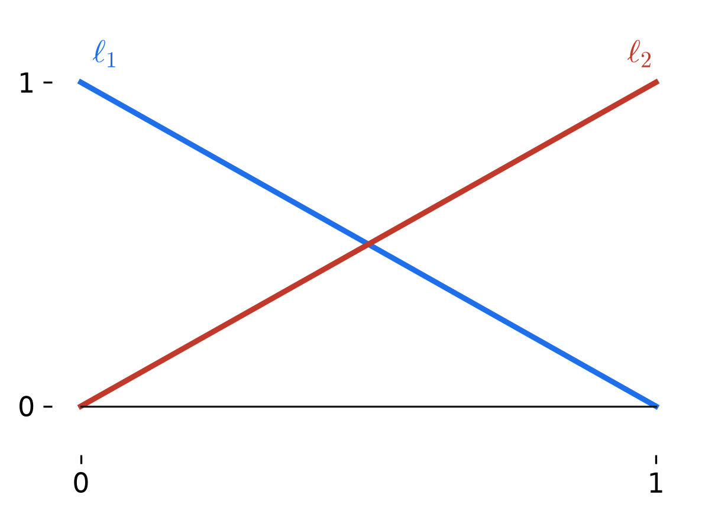
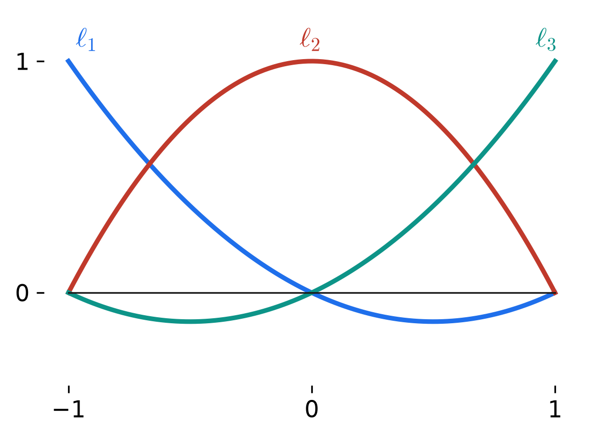
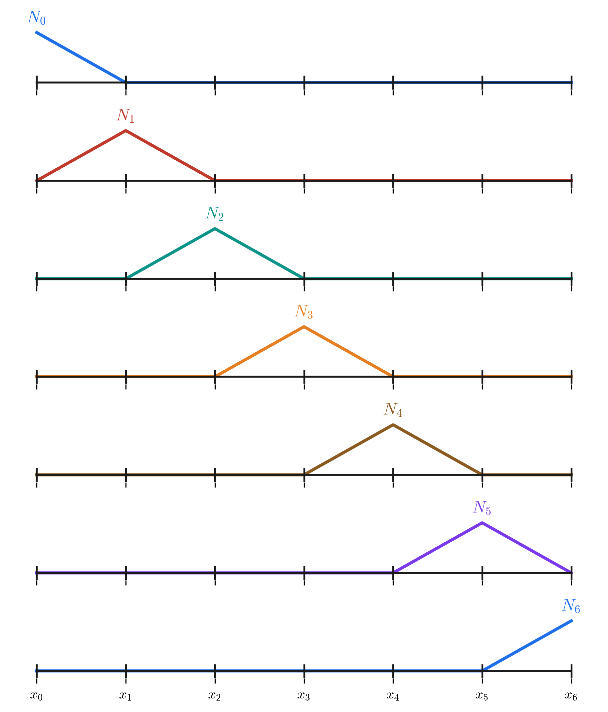
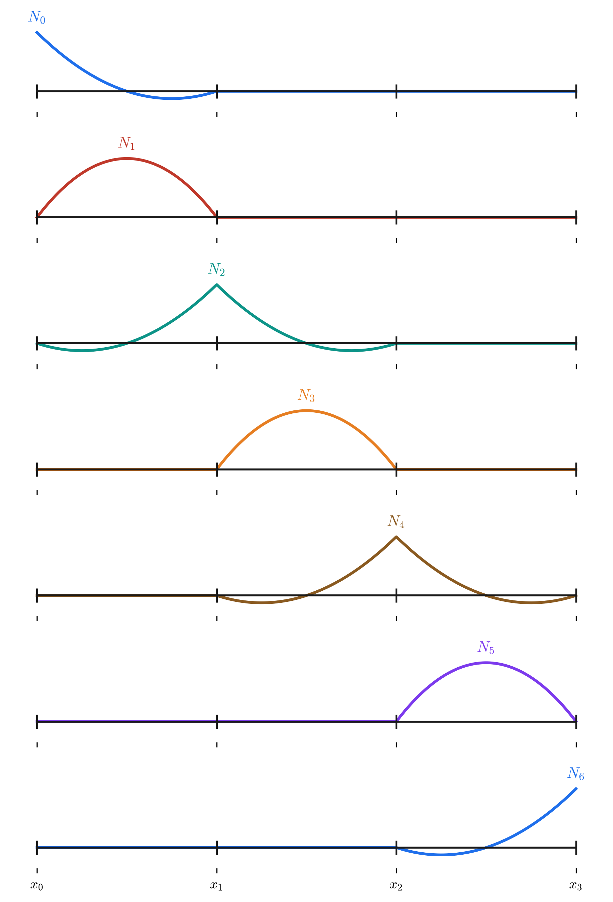

6 Class 6: Basis Functions and Lagrange Polynomials
7 Last time
\((\mathrm{S}) \Rightarrow (\mathrm{W})\): given \(f\), \(g\), \(h\), and \(\underline{\underline{K}}\), let
\[ \mathcal{S} = \left\{\, u \in H^1(\Omega) \;\middle|\; u = g \text{ on } \Gamma_g \,\right\} \qquad\qquad \mathcal{V} = \left\{\, w \in H^1(\Omega) \;\middle|\; w = 0 \text{ on } \Gamma_g \,\right\} \]
Find \(u \in \mathcal{S}\) such that \(\forall\, w \in \mathcal{V}\),
\[ \int_\Omega \nabla w \cdot \underline{\underline{K}}\nabla u\;d\Omega = \int_\Omega wf\;d\Omega + \int_{\Gamma_h} wh\;d\Gamma \]
or, in condensed form,
\[ a(w, u) = (w, f) + (w, h)_{\Gamma_h} \]
This is just shorthand: \(a(\cdot,\cdot)\) is the bilinear form \(a(w,u) = \int_\Omega \nabla w \cdot \underline{\underline{K}}\nabla u\;d\Omega\), \((\cdot,\cdot)\) is the \(L^2\) inner product \((w,f) = \int_\Omega wf\;d\Omega\), and \((\cdot,\cdot)_{\Gamma_h}\) is the same inner product taken over \(\Gamma_h\) instead of \(\Omega\). Bilinearity is what lets us pull the coefficients \(c_A\), \(d_B\) out of these expressions later — see the bilinearity note in Class 3.
Galerkin Form: choose a tractable set of functions with good properties (i.e. density in \(H^1(\Omega)\)). Pick \(\mathcal{S}^h \subset \mathcal{S}\), \(\mathcal{V}^h \subset \mathcal{V}\) — discrete, e.g. sines and cosines, or piecewise polynomials.
Given \(f\), \(g\), \(h\), and \(\underline{\underline{K}}\), find \(u^h \in \mathcal{S}^h \subset \mathcal{S}\) such that \(\forall\, w^h \in \mathcal{V}^h\),
\[ \int_\Omega \nabla w^h \cdot \underline{\underline{K}}\nabla u^h\;d\Omega = \int_\Omega w^h f\;d\Omega + \int_{\Gamma_h} w^h h\;d\Gamma \qquad \text{or} \qquad a(w^h, u^h) = (w^h, f) + (w^h, h)_{\Gamma_h} \]
8 Choosing the basis
We choose a set of functions that give us the behavior we like and are a basis for our space of interest.
8.1 Basis: a linear-algebra idea
- linearly independent
- span the space
Together, these mean you can represent any item in the space uniquely as a sum of coefficients times members of the basis.

The first two are bases (their vectors are linearly independent — the determinant of the matrix formed from them is nonzero). The third pair, \(\{[-1,1],[1,-1]\}\), is not a basis: the two vectors are scalar multiples of each other (anti-parallel), so they span only a line, not the plane. The fourth set has three vectors in \(\mathbb{R}^2\) — too many to be a basis, since a basis for \(\mathbb{R}^2\) has exactly two elements, though any two of the three (chosen to be independent) would work.
8.2 Choosing a basis for piecewise polynomials
For us, we want bases of piecewise polynomials — use the Lagrange polynomials.
Example: \(y = mx + b\) on domain \([0, 1]\). Then
\[ y \approx b\,\ell_1(x) + (m+b)\,\ell_2(x) \qquad \text{(polynomial degree 1)} \]
\[ \ell_1(x) = \frac{x - 1}{0 - 1} \qquad\qquad \ell_2(x) = \frac{x - 0}{1 - 0} \]

For a quadratic, \(y = \alpha x^2 + \beta x + \gamma\) on domain \([-1, 1]\):
\[ y(x) \approx (\alpha - \beta + \gamma)\,\ell_1(x) + \gamma\,\ell_2(x) + (\alpha + \beta + \gamma)\,\ell_3(x) \qquad \text{(polynomial degree 2)} \]
\[ \ell_1(x) = \frac{(x-0)(x-1)}{(-1-0)(-1-1)} \qquad \ell_2(x) = \frac{(x-(-1))(x-1)}{(0-(-1))(0-1)} \qquad \ell_3(x) = \frac{(x-(-1))(x-0)}{(1-(-1))(1-0)} \]

9 From one element to a mesh: piecewise Lagrange bases (\(p=1\))
Then we choose, e.g., Lagrange polynomial bases on a finite number of intervals, or “elements.”

These are a basis for the space of piecewise-linear functions from \(x_0 = 0\) to \(x_n = L\), with pieces meeting at each \(x_i\).
10 If we choose Lagrange polynomials of degree 2
Now each element carries three local nodes (two endpoints and a midpoint), so the basis functions have a mix of shapes: interior-node functions are single humps confined to one element, while shared-endpoint functions must be smooth across the element boundary.

These are a basis for the space of piecewise-quadratic functions from \(x_0 = 0\) to \(x_n = L\), piecewise at each element boundary \(x_i\).
11 For this class only: a compact notation
Say \(P_{p,n}\) is piecewise polynomial functions of degree \(p\), split into \(n-1\) even intervals. Then, with a little love, we can make \(\mathcal{S}^h \sim P_{p,n} \sim \mathcal{V}^h\).
For sake of concreteness, assume \((\mathrm{W})\): \(a(w,u) = (w,f) + w(0)h\), \(u(L) = g\). Particularly, let \(u^h = v^h + g^h\):
\[ v^h(x) = \sum_{B=0}^{\text{all but last}} d_B\,N_B(x) \qquad\qquad g^h(x) = g\,N_{\text{last}}(x) \]
Then \(v^h \in \mathcal{V}^h\), \(w^h \in \mathcal{V}^h\) are \(w^h(x) = \sum_{A=0}^{\text{all but last}} c_A\,N_A\), and \(u^h \in \mathcal{S}^h\).
And we have
\[ a(w^h, u^h) = (w^h, f) + w(0)h \qquad\Longrightarrow\qquad a(w^h, v^h + g^h) = (w^h, f) + w(0)h \qquad\Longrightarrow\qquad a(w^h, v^h) = (w^h, f) + w(0)h - a(w^h, g^h) \]
In multiple dimensions,
\[ v^h = \sum_{B \notin \Gamma_g} d_B\,N_B(x) \qquad w^h = \sum_{A \notin \Gamma_g} c_A\,N_A(x) \qquad g^h = \sum_{B \in \Gamma_g} g_B\,N_B(x) \]
\[ a(w^h, v^h) = (w^h, f) + (w^h, h)_{\Gamma_h} - a(w^h, g^h) \]
This last rearrangement — splitting the trial solution into a part \(v^h\) built from basis functions that vanish on \(\Gamma_g\), plus a “lift” \(g^h\) that carries the known boundary values — is exactly how the Dirichlet boundary condition gets enforced in a computer implementation. The next class works through this in full, arriving at a concrete matrix equation.